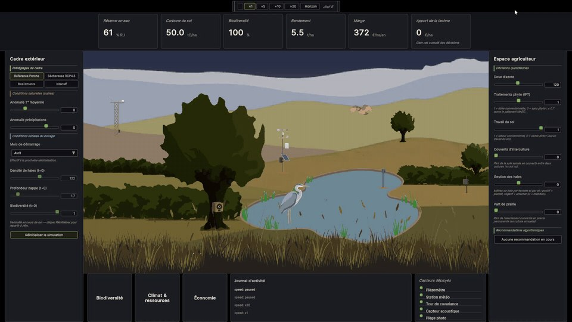
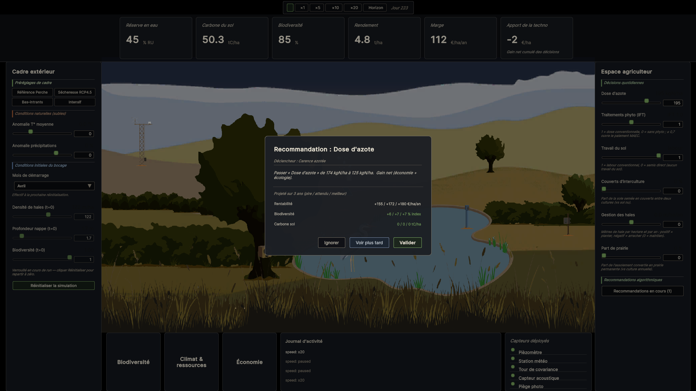

Simulation / environment
Bocage Digital Twin
An instrumented digital twin of a Norman bocage, built to test a conviction: a system can be optimised by reconciling ecology and economy, rather than systematically setting the two against each other.

Context
Ecology and economy are constantly presented as opposites. My conviction: a system can be optimised by reconciling the two, rather than systematically opposing them. My hypothesis: access to data makes that reconciliation possible. It is the promise of Industry 4.0, brought down to the scale of an ecosystem.
Rather than assert it, I built a model that tests it. The simulation never presupposes the answer: manage it badly, and ecology and economy both suffer — and the twin reflects that. It is a real digital twin, not a game: every variable comes from a measurement, never from the calendar or a scripted mood.
Approach
Real-time simulation of a fictional but plausible Perche bocage site. You step into the farmer's shoes and steer 6 levers (nitrogen, pesticides, tillage, cover crops, hedgerows, share of grassland) against 2 climate settings, and watch the consequences cascade onto water, carbon, nitrogen, yield, biodiversity and margin.
Two simulations run in parallel on the same seeds: the real run follows your decisions, while a “shadow” run keeps the initial decisions frozen. Their gap, in euros, measures the contribution of the instrumentation — measured, never assumed.
5 key indicators (available water capacity, soil carbon, biodiversity, yield, margin) and 3 thematic panels; every figure is traceable back to a variable in the model. 5 sensors (weather station, eddy-covariance tower, piezometer, acoustic sensor, camera trap) are clickable in the scene for their measured reading and their noise model.
Guiding principle: the sensor comes first. Birds and the heron only appear when the measured biodiversity index justifies it. The tint of the trees and bushes also varies to reflect their health on screen, on the same principle.
This is where the recommendation engine comes in, derived from the model rather than scripted. It evaluates every possible decision and projects its outcomes in three scenarios (worst / expected / best): win-win moves, better for both ecology and economy, surface as proactive pop-ups, while trade-offs stay in a passive list. The tool informs the trade-off; it does not make it: the user always decides.

Result
- Deterministic model: same seed and same inputs ⇒ same run.
- Orders of magnitude sourced (INRAE, Solagro, Arvalis/COMIFER, Efese, PNR du Perche, Météo-France).
- An honest indicator: the contribution of the instrumentation measures the marginal gain in accuracy, not proof that good management requires sensors.
- The model forces a real trade-off: managing badly makes ecology and economy fall together.
- The recommendation engine is derived from the model, with no hard-coded rules: it identifies win-win moves without ever deciding on the user's behalf.
Demo & code
The twin runs directly in the browser (WebGL). The software architecture is split into 5 strict layers (Simulation Core / Sensors / Decision / Indicators / Presentation), with the simulation core written in pure C#, free of any Unity dependency, tested headless.